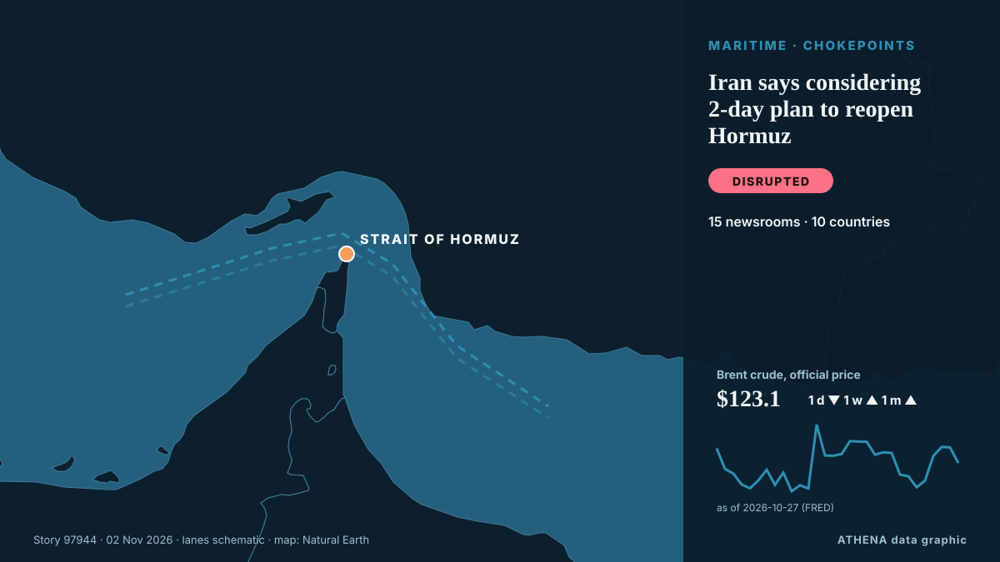

Shipping & ports
SponsoredPresented by  Cybernetics and Artificial Intelligence Lab Welcome to the Cybernetics and Artificial Intelligence Laboratory, established at the Department of Business Administration of the National
Cybernetics and Artificial Intelligence Lab Welcome to the Cybernetics and Artificial Intelligence Laboratory, established at the Department of Business Administration of the National
| 20 Oct | 0 |
|---|---|
| 21 Oct | 0 |
| 22 Oct | 0 |
| 23 Oct | 1 |
| 24 Oct | 0 |
| 25 Oct | 0 |
| 26 Oct | 1 |
| 27 Oct | 0 |
| 28 Oct | 2 |
| 29 Oct | 3 |
| 30 Oct | 8 |
| 31 Oct | 1 |
| 1 Nov | 4 |
| 2 Nov | 3 |

Iran says considering 2-day plan to reopen Hormuz
Tehran: Iran's foreign ministry on Monday said it was considering a two-day plan to reopen the Strait of Hormuz if the US agrees to its conditions, having previously proposed a one... from Oman Observer
SCA says Maersk's COO anticipates all services back through Suez by March 2027
The Suez Canal Authority says Rabab Boulos anticipates the whole Maersk network back in the canal by March 2027, and its count shows Maersk's transits nearly doubling year on year. from Container Magazine
Vessel Struck in Strait of Hormuz
Data and insights tracking transit activity, oil prices, petroleum reserves, supply chain impacts and geopolitical developments affecting the waterway. from IndustryWeek
Israeli Ambassador Rejects Turkey-Libya Maritime Deal, Backs Greece
Israel’s Ambassador to Greece, Pnina Yanai, condemns the Turkey-Libya maritime memorandum and reaffirms Israel’s respect for Greek sovereignty and international law. from Greek City Times
Tanker struck by two projectiles near Saudi port in Persian Gulf - UKMTO
The location of the latest strike matters most for oil. from investingLive (ForexLive)
SFL Newbuild agreements and long-term charters of two 8,800 TEU container vessels and one very large ammonia carrier
SFL Corporation announced that it has agreed to acquire two 8,800 TEU Container Vessels with scheduled delivery in 2027 and. from Cyprus Shipping News
Emirates Shipping restructures India–Red Sea network
Emirates Shipping Line will reorganise its services between India and the Red Sea, according to DynaLiners. from Container News
Tanger Med 3 terminal due to start operations in mid-2031
Tanger Med, Morocco (Ports Europe) November 2, 2026 – The Tanger Med 3 container terminal is due to start operations in mid-2031, Tanger Med chief executive Mehdi Tazi-Riffi said. from Ports Europe
Tanker struck by projectile in Strait of Hormuz
KUWAIT CITY, Oct 23: A tanker reported being struck by an unknown projectile while sailing outbound through the Strait of Hormuz, about seven nautical miles northeast of Limah, Oma... from Arab Times
Panama Canal Strengthens Long-Term Vision Following 41st Advisory Board Meeting
The Panama Canal Boards of Directors and Advisors concluded their 41st meeting today, following three days of discussions focused on evaluating opportunities for the waterway’s growth in a rapidly… from Panama Canal Authority
Taiwan says China harassing shipping with east coast patrol
TAIPEI, Nov 1 (Reuters) – China’s Coast Guard is harassing shipping with its latest patrol off Taiwan’s east coast and trying to exert a fictional jurisdiction, the Taiwanese Coast Guard said, adding… from gCaptain
Iran submits evidence of US-Israeli attacks on ports, maritime infrastructure to IMO
London, IRNA — Iran has submitted documents and photographic evidence of US and Israeli attacks on the country’s ports, civilian vessels, and maritime infrastructure to the International Maritime… from IRNA (English)
Natalia Margioli Breaks a 115-Year Barrier at Shipbrokers’ Institute
Natalia Margioli has become the first woman and first Greek to serve as president of the Institute of Chartered Shipbrokers in 115 years. from Greek City Times
Iran Guards Say Halted 3 Tankers After 'Incidents' In Strait Of Hormuz
The Iran Guards did not specify the nature of the incidents, which came a day after Iran's armed forces said at least four tankers had stopped in the area after hitting mines. from NDTV
Iran Says Four Tankers Hit Mines in Hormuz as US Insists Shipping Lanes Are Clear
Iran says four oil tankers caught fire after striking mines in the Strait of Hormuz, a claim that directly challenges US assurances that the main shipping lanes through the waterway have been cleared. from Greek City Times
Tanker carrying 27 Indians struck by limpet mines in Strait of Hormuz; minister says all seafarers safe
The incident took place on Thursday, 25 nautical miles (46 km) northeast of Oman's Khasab, British navy agency United Kingdom Maritime Trade Operations said. from Hindustan Times
Oman rescues 25 from burning ship, Iran halts tankers
Oman’s navy evacuated the crew members from the Panamanian-flagged merchant ship RITI after it was attacked and caught fire. from Free Malaysia Today
Aggressors bear responsibility for disruption in Persian Gulf, Strait of Hormuz: Iran envoy
New York, IRNA – Iran’s Ambassador and Chargé d’Affaires to the United Nations in New York Gholamhossein Darzi has said aggressors bear direct responsibility for any disruption, obstruction or… from IRNA (English)
Feds tap Delta, B.C., port expansion as 'project of national interest'
The federal government has listed Roberts Bank Terminal 2 in Delta, B.C., as a "project of national interest" to expand and diversify Canada's trade capacity. from CBC News (alternative feed)